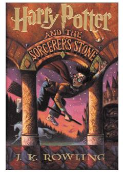

HPSehrli olamga kirib kelayotgan yosh sehrgar Garri Potterning ilk sarguzashtlari.
Sehrli qobiliyatga ega yetim bola Garri Potterning sehrgarlar maktabidagi sarguzashtlari boshlanishi haqidagi mashhur roman. U o'zining kimligini va ota-onasining o'tmishini kashf etib, yovuz kuchlarga qarshi kurashga kirishadi.